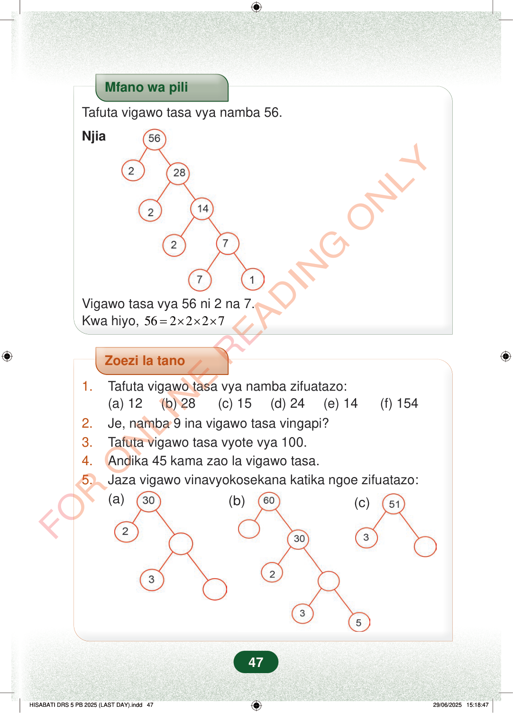

Mfano wa piliTafuta vigawo tasa vya namba 56.NjiaVigawo tasa vya 56 ni 2 na 7.Kwa hiyo,562227=×××Zoezi la tano1.Tafuta vigawo tasa vya namba zifuatazo:(a) 12 (b) 28 (c) 15 (d) 24 (e) 14 (f) 1542.Je, namba 9 ina vigawo tasa vingapi?3.Tafuta vigawo tasa vyote vya 100.4.Andika 45 kama zao la vigawo tasa.5.Jaza vigawo vinavyokosekana katika ngoe zifuatazo:(a)(b)(c)47
Mfano wa pili
Tafuta vigawo tasa vya namba 56.
Njia
Vigawo tasa vya 56 ni 2 na 7. Kwa hiyo, 56 2 2 2 7 = × × ×
Zoezi la tano
1. Tafuta vigawo tasa vya namba zifuatazo: (a) 12 (b) 28 (c) 15 (d) 24 (e) 14 (f) 154 2. Je, namba 9 ina vigawo tasa vingapi? 3. Tafuta vigawo tasa vyote vya 100. 4. Andika 45 kama zao la vigawo tasa. 5. Jaza vigawo vinavyokosekana katika ngoe zifuatazo:
(a)
(b)
(c)
47
Mfano wa piliTafuta vigawo tasa vya namba 56.NjiaMti wa vigawo wa 56 unaonyesha 56 ikigawanywa kuwa 2 na 28, kisha 28 kuwa 2 na 14, na 14 kuwa 2 na 7.Vigawo tasa vya 56 ni 2 na 7.Kwa hiyo, 56 = 2×2×2×7Zoezi la tano1.Tafuta vigawo tasa vya namba zifuatazo:(a) 12(b) 28(c) 15(d) 24(e) 14(f) 1542.Je, namba 9 ina vigawo tasa vingapi?3.Tafuta vigawo tasa vyote vya 100.4.Andika 45 kama zao la vigawo tasa.5.Jaza vigawo vinavyokosekana katika ngoe zifuatazo:(a)Mti wa vigawo wa 30 wenye 2 na 3 tayari zimeandikwa, na duara mbili tupu za kujaza.(b)Mti wa vigawo wa 60 unaonyesha 30, 2, 3 na 5, na duara mbili tupu za kukamilisha.(c)Mti wa vigawo wa 51 wenye 3 upande mmoja na duara tupu upande mwingine.